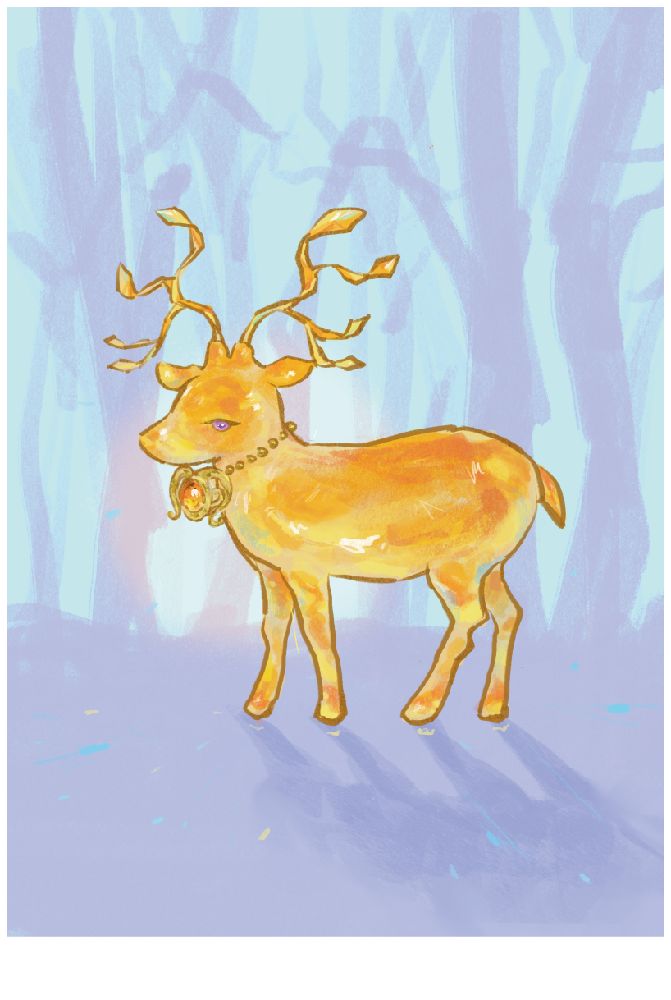
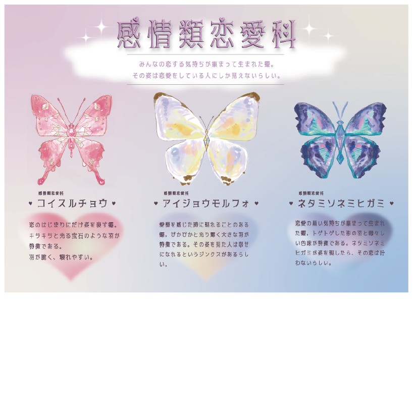

WORKS
作品
イラストレーション
琥珀の鹿

[制作期間] 1週間
[制作ソフト] Procreate
学校サークル「アート×テクノラボ」の活動として、竜王駅で開催されたイルミネーションイベント「ドラゴンナイト」のイラスト制作を担当しました。
イルミネーションの幻想的な雰囲気に合うよう、身体が琥珀でできた鹿をモチーフに、光をまとったような印象を与えるビジュアルを制作しました。
琥珀の透明感や輝きを意識して色彩や質感を工夫し、イベントの世界観に溶け込みながらも印象に残るイラストを目指しました。
新種の蝶

[制作期間] 3週間
[制作ソフト] Illustrator・Procreate
物事をカテゴライズ・編集し、それを表す新種の蝶を考える課題です。
「感情」を類とし、恋愛する人に生まれる感情である「恋・愛情・妬み」を3つの科に見立て、それぞれの感情を新種の蝶としてビジュアル化しました。
目に見えない感情を形に変換することをテーマに、感情ごとの特徴を形や構成に落とし込みました。
中でも「恋」と「愛情」は似ているようで異なる感情として捉え、その微妙なニュアンスの違いをどのように形で表現するかにこだわりました。